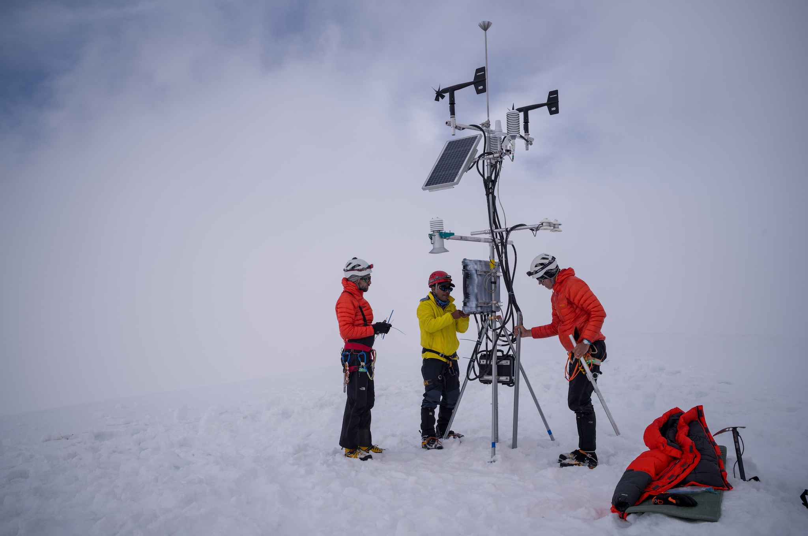

Wildlife
Discover iconic animals and ecosystems from around the world.

From frozen mountains and dense forests to wildlife habitats and remote landscapes, this project celebrates photography and exploration. It demonstrates accessibility, Flexbox, Grid layouts, hover effects, and semantic web design principles.
Discover iconic animals and ecosystems from around the world.

Explore remote mountains, deserts and dramatic scenery.

Experience forests, rivers and places rarely seen up close.